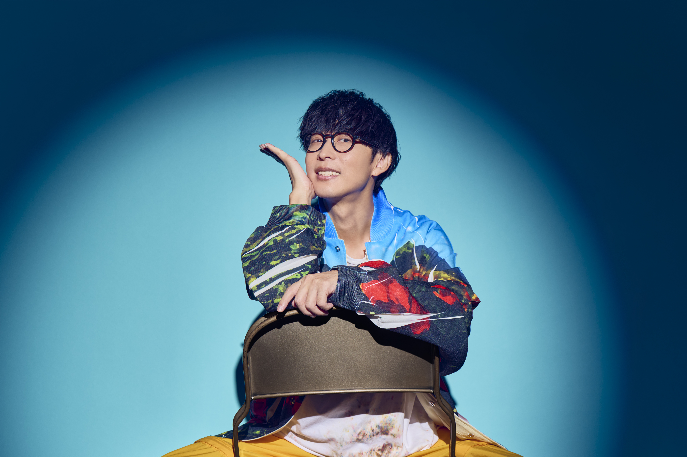

アーティスト

オーイシマサヨシ
1980年生まれ、愛媛県出身。
シンガーソングライター大石昌良が、エンターテイナーとしての側面を強めて主にアニメやゲームの楽曲を歌う時に使用する名義。
2001年にスリーピースバンド「Sound Schedule」のボーカル＆ギターとして「吠える犬と君」でメジャーデビューし、2008年に大石昌良としてソロ活動を開始。
2014年よりオーイシマサヨシ名義として「君じゃなきゃダメみたい」（TVアニメ「月刊少女野崎くん」OP主題歌）で自身3度目のデビュー。
以降、「ようこそジャパリパークへ」など多くのアニメ主題歌を手掛け、Tom-H@ckとのユニット「OxT」、他アーティストへの楽曲提供も行うなど多様な名義を使い分けて活動中。
また、MC業や俳優業にも挑戦するなどマルチな活動を展開している。
2024年3月2日に自身初となる日本武道館でのワンマンライブ”オーイシ武道館”を開催し、当日会場には1万人、配信では4万人、合計5万人を動員する大記録を達成。
2025年3月29日開催の”オーイシ武道館 Vol.2”も即完し、9月にはさいたまスーパーアリーナでのワンマンライブ "オーイシSSA" 2Daysが決定している。
SCHEDULE
date 2025 09.07 SUN
venue 工学院大学 八王子キャンパス 体育館
open/start 17:00/ 18:00
TICKET
学内生(工学院大学附属中学校・高等学校含む) 1300円
一般 2300円
学内生チケット
販売日時
７月７日～８月１日（平日のみ）
※１１：４０～１２：３０
１７：３０～１８：３０
（完売次第終了）
※お昼の販売は新宿キャンパスのみです。
販売場所
新宿キャンパス
１階 アトリウム ※地下１階 ＥＶ０３前
八王子キャンパス
１８号館 生協横
学生証とチケットの料金をお持ちになりお越しください。
支払いは現金のみとなっております。
新宿キャンパスと八王子キャンパスでのチケット発売に差異はございません。
一般チケット
販売日時
８月３日 １０：００～
（完売次第終了）
購入するためのリンクは後日公開予定
注意事項
・本券は一枚につき一回限り有効です。また、再入場不可となっております。
・入場前に半券を切り落とすと無効となります。
・会場内ではスタッフの指示、注意に従ってください。従わない場合は入場のお断り、退場していただく場合がございます。
・スタッフの指示や注意に従わなかった場合に生じた事故につきましては、主催者側は一切の責任を負いません。
・会場内での撮影、録音は禁止です。
・酒類、刃物、危険物を持ち込むことは禁止です。
・都合により内容の一部を変更する場合がございます。あらかじめご了承ください。
・会場内の飲食物の持ち込みは禁止となっております。
・公演中止の場合を除いて、返金は一切行いません。
・ご購入されたチケットの転売はいかなる理由があっても禁止です。
・転売で購入されたチケットや不法行為によるチケットのトラブルは一切の責任を負いません。
・当日、お車でのご来場は禁止となっております。公共交通機関をご利用ください。
・乳幼児、未就学児、ペットの入場はできません。
・会場内は禁煙です。喫煙は所定の場所でお願いいたします。
・会場内での盗難について、主催者側での責任は一切負いません。